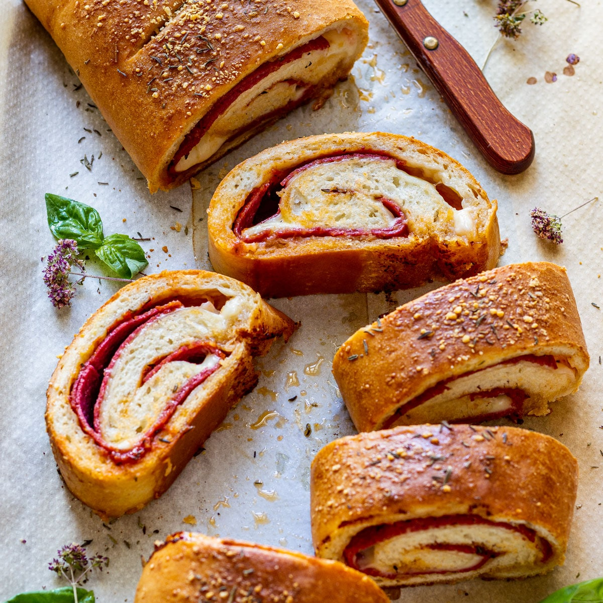

Stromboli

Description
Tasty Stromboli recipe using homemade dough. This delicious Stromboli pizza can be enjoyed warm or cold. It makes a great lunch, dinner, snack or school lunch!
Ingredients
Stomboli Dough
- 3.5 cups strong flour (500 grams)
- 1.5 teaspoons salt
- 2 teaspoons instant yeast
- 1 teaspoon granulated sugar
- 3 tablespoons olive oil
- 1¼ cups lukewarm water (300 milliliters)
Stromboli Filling
- 2 tablespoons pizza sauce
- 8 ounces salami
- 5 ounces mozzarella cheese
Instructions
- Making dough: In a bowl of your stand mixer, combine flour, salt, yeast, sugar and olive oil. Mix with a spoon. Add water and mix again with a spoon. Now, with the dough attachment, knead for about 4 minutes, until the dough is spring-y and smooth.
- Cover with plastic wrap and/or clean tea towel and let rise for 40-60 minutes or until it doubles in size (depending on how warm it is in your kitchen).
- When ready, divide the dough in half. Take one half and on a floured surface roll it into a large rectangle (about 12×9-inches/30×24-centimeters). It’s better when it’s thicker than a pizza dough.